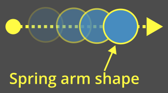
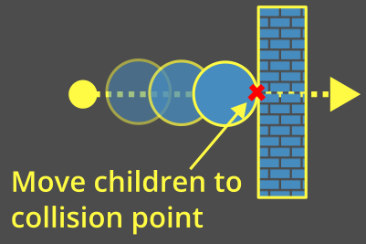
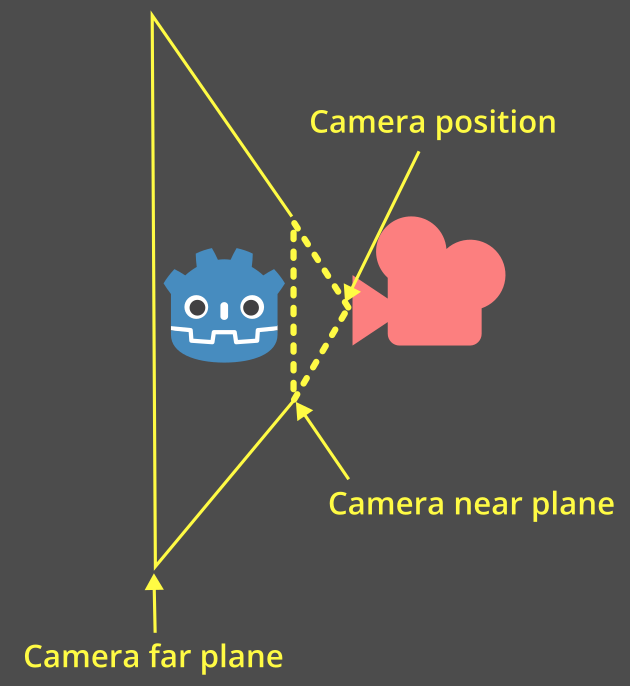
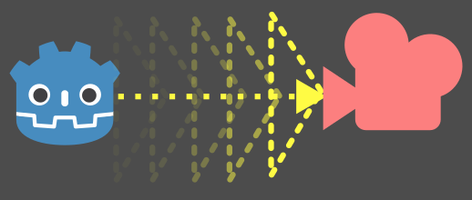
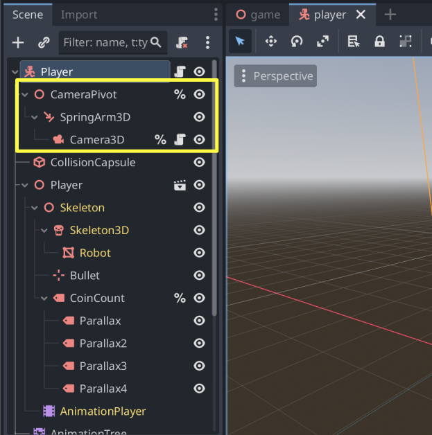

Camera góc nhìn thứ ba với spring arm
Giới thiệu
Game 3D thường có camera góc nhìn thứ ba đi theo và xoay quanh một đối tượng như nhân vật người chơi hoặc phương tiện.
Trong Godot, bạn có thể làm điều này bằng cách đặt một Camera3D làm con của một node. Tuy nhiên, nếu bạn làm vậy mà không có thêm bước nào, bạn sẽ thấy camera xuyên qua hình học và che khuất scene.
Đây là lúc node SpringArm3D phát huy tác dụng.
Spring arm là gì?
Spring arm có hai thành phần chính ảnh hưởng đến hành vi của nó.
"Chiều dài" (length) của spring arm là khoảng cách tính từ vị trí toàn cục của nó để kiểm tra va chạm:

"Hình dạng" (shape) của spring arm là thứ nó dùng để kiểm tra va chạm. Spring arm sẽ "quét" hình dạng này từ gốc của nó ra theo chiều dài.

Spring arm cố gắng giữ tất cả các node con ở cuối chiều dài của nó. Khi hình dạng va chạm với thứ gì đó, các node con sẽ được đặt tại hoặc gần điểm va chạm đó:

Spring arm với camera
Khi đặt một camera làm con của spring arm, một hình chóp đại diện cho camera sẽ được dùng làm hình dạng.
Hình chóp này đại diện cho mặt phẳng gần (near plane) của camera:

Ghi chú
Nếu spring arm được gán một hình dạng cụ thể, hình dạng đó sẽ luôn được dùng.
Hình dạng của camera chỉ được dùng nếu camera là con trực tiếp của spring arm.
Nếu không có hình dạng nào được cung cấp và camera không phải con trực tiếp, spring arm sẽ quay về dùng ray cast, vốn không chính xác cho va chạm camera và không được khuyến nghị.
Ở mỗi khung hình xử lý vật lý, spring arm sẽ thực hiện một motion cast để kiểm tra xem có va chạm với thứ gì không:

Khi hình dạng chạm vào thứ gì đó, camera sẽ được đặt tại hoặc gần điểm va chạm:

Thiết lập spring arm và camera
Hãy thêm thiết lập camera dùng spring arm vào demo platformer.
Ghi chú
Bạn có thể tải demo Platformer 3D trên GitHub hoặc qua Asset Library.
Nhìn chung, với thiết lập camera góc nhìn thứ ba, bạn sẽ có ba node làm con của node mà bạn đang theo dõi:
Node3D ("điểm xoay" cho camera)
SpringArm3D
Camera3D
Mở scene player/player.tscn. Thiết lập các node này làm con của player và đặt tên duy nhất (unique name) cho chúng để có thể tìm thấy trong script. Nhớ xóa node camera hiện có!

Hãy dịch điểm xoay lên 2 theo trục Y để nó không nằm trên mặt đất:

Đặt chiều dài spring arm là 3 để nó nằm phía sau nhân vật:

Ghi chú
Để Shape của spring arm là <empty>. Như vậy, nó sẽ dùng hình chóp của camera.
Nếu muốn, bạn cũng có thể thử các hình dạng khác - hình cầu là lựa chọn phổ biến vì nó trượt mượt dọc theo các cạnh.
Cập nhật phần đầu của player/player.gd để lấy camera và điểm xoay theo tên duy nhất của chúng:
# Comment out this existing camera line.
# @onready var _camera := $Target/Camera3D as Camera3D
@onready var _camera := %Camera3D as Camera3D
@onready var _camera_pivot := %CameraPivot as Node3D
Thêm hàm _unhandled_input để kiểm tra chuyển động camera rồi xoay điểm xoay tương ứng:
@export_range(0.0, 1.0) var mouse_sensitivity = 0.01
@export var tilt_limit = deg_to_rad(75)
func _unhandled_input(event: InputEvent) -> void:
# Mouselook implemented using `screen_relative` for resolution-independent sensitivity.
if event is InputEventMouseMotion:
_camera_pivot.rotation.x -= event.screen_relative.y * mouse_sensitivity
# Prevent the camera from rotating too far up or down.
_camera_pivot.rotation.x = clampf(_camera_pivot.rotation.x, -tilt_limit, tilt_limit)
_camera_pivot.rotation.y += -event.screen_relative.x * mouse_sensitivity
Khi xoay điểm xoay, spring arm cũng sẽ xoay theo và thay đổi vị trí của camera. Hãy chạy game và để ý rằng chuyển động chuột giờ đây sẽ xoay camera quanh nhân vật. Nếu camera di chuyển vào tường, nó sẽ va chạm với tường.